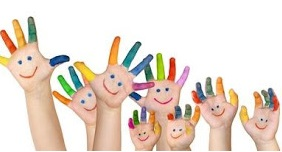

-

Children with 1. Child has ADD/ADHD, PDD/ASD - Autism / Aspergers,Child with Learning difficulties(LD) – Dyslexia(Reading),Dysgraphia (Writing), Dysorthographia (Spelling) & Dyscalculia (Arithmetic),Cerebral palsy (CP), Mentally Retarded MR-Mild & Moderate,etc.2. Child with difficulty in speech-Language and communication.3. Child with difficulty in gross motor and fine motor skills.Vikash & Vanivikash →
-
Developmental 4. Child with poor in activities of daily-living (ADL) skills ( eating, bathing, dressing, toileting etc)5. Child with difficulty in attention, concentration.6. Child with immature for chronological age.7. Child has poor socialization (not well linked by other peers or adults)8. Child needs constant individual attention and supervision(both school and home activities)Vikash & Vanivikash →Challenges 9. Child is easily distracted and or impulsive/frustrated/often alone.10. Child is poor in academic performance (reading, writing, speaking, spelling, reasoning, math, and comprehension skills)11. Child is very active or very placid12. Child has behavioral, self esteem and motivational problem.Vikash & Vanivikash →
VIKASH & VANIVIKASH.
“VIKASH & VANIVIKASH” Children’s Rehab Centre (CRC), is a “Developmental Stimulation, Training and education centre” providing individualized (one to one) services for children with movement, co-ordination, learning, speech-language, social-emotional & behavior problem in and around Rourkela, Steel city ,Western Odisha, India, since 2003
Identifying a child withADD/ADHD, Autism, Mental retardation, learning disability or other developmental delays and placing them in a special school/special class in a normal school is not the part of this program. The aim is to make them to move well, speak fluently, play and develop the skill necessary for everyday learning and living.
Vikash & Vanivikash →-
 VIKASH & VANIVIKASH “VIKASH & VANIVIKASH” Children’s Rehab Centre (CRC), is a “Developmental Stimulation, Training and education centre” providing individualized (one to one) services for children with movement, co-ordination, learning, speech-language, social-emotional & behavior problem in and around Rourkela, Steel city ,Western Odisha, India, since 2003 ..Vikash & Vanivikash →
VIKASH & VANIVIKASH “VIKASH & VANIVIKASH” Children’s Rehab Centre (CRC), is a “Developmental Stimulation, Training and education centre” providing individualized (one to one) services for children with movement, co-ordination, learning, speech-language, social-emotional & behavior problem in and around Rourkela, Steel city ,Western Odisha, India, since 2003 ..Vikash & Vanivikash → -
VIKASH & VANIVIKASH “VIKASH & VANIVIKASH” Children’s Rehab Centre (CRC), is a “Developmental Stimulation, Training and education centre” providing individualized (one to one) services for children with movement, co-ordination, learning, speech-language, social-emotional & behavior problem in and around Rourkela, Steel city ,Western Odisha, India, since 2003Vikash & Vanivikash →
-
VIKASH & VANIVIKASH “VIKASH & VANIVIKASH” Children’s Rehab Centre (CRC), is a “Developmental Stimulation, Training and education centre” providing individualized (one to one) services for children with movement, co-ordination, learning, speech-language, social-emotional & behavior problem in and around Rourkela, Steel city ,Western Odisha, India, since 2003Vikash & Vanivikash →
Welcome to Vikash & VanivikashVikash & Vanivikash
“VIKASH & VANIVIKASH” (Children’s Rehab Centre), is a “Special Education Therapy Centre” providing individualized (one to one) services for children with Intellectual & Developmental Disabilities (Problem in SPEECH-LANGUAGE, MOTOR-MOVEMENT, CO-ORDINATION, LEARNING, PSYCHOSOCIAL, EMOTIONAL & BEHAVIOR) Like- AUTISM, ADHD, Leaning Disabilities (LD) Intellectual Disabilities (ID/ MR) and Others in and around Rourkela, Odisha, India.
Some children are slow/backward/different due to immature of age-appropriate developmental skills, The child is slow in development means he/she is more or less slow in one or many aspects; Physical, Mental, Psycho-social, Sensory-Perceptual and motor. Some children are temporarily backward in development but otherwise normal or some may be severely backward. All children are not alike, Individual differences are related to the degree of organization and development of brain body and mind.
As parents you will have concerns & hopes for your child. If your child is not developing like their typical peers, you are likely to be all the more anxious & worried. Vikash & Vanivikash (Children’s Rehab Centre), has been providing comprehensive services (one to one) using variety of Innovative Therapy, Training and Educational Teaching Techniques to explore, interact and adopt to their world throughout their lifespan. It strives to maximize learning potential and communication by empowering families and clients to enhance their quality of life. It provides well balanced high quality therapeutic intervention in Communication, Peer activities, Fine and Gross motor and self - help skills etc. to the clints.

Copyright@2013 Vikash & Vanivikash all rights reserved Powered by Lyonzone